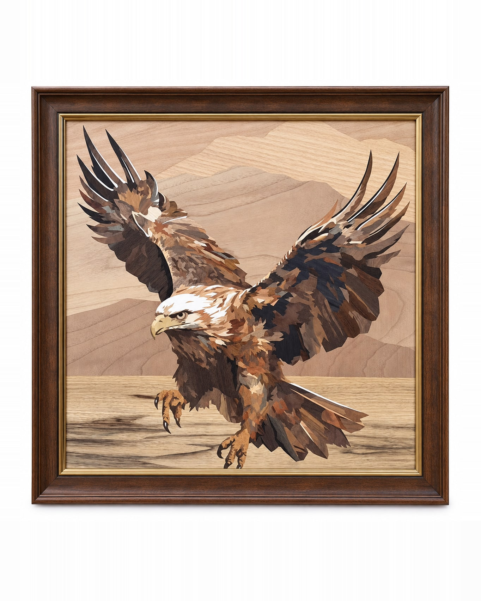

Opere Originali,
Disponibili Ora
Ogni opera qui presentata è un originale, tagliato a mano da impiallacciature di legno naturale. Le opere indicate come «Non in vendita» sono mostrate a titolo di riferimento; tutte le altre sono pronte per essere acquisite.

Black Woman
Uno studio di luminosità e dignità. Il frassino chiaro cede all’ombra del noce — un calore che nessuna pittura può replicare.
King of Ararat
Radicata nella memoria armena e nella montagna sacra. Wenge profondo e amboina — un’identità custodita senza nostalgia.
Strength in Harmony
Due presenze. Due direzioni di venatura. Un doppio ritratto che afferma il legame che raffigura.
The Lion Within
850 tasselli. Una forza contenuta — non il leone che ruggisce, ma quello che riposa in piena consapevolezza.
Geometric German Shepherd
125 frammenti di legno tagliati con precisione. Frammentazione e ricostruzione della forma — identità e forza espresse nel legno naturale.
Eagle
Un’aquila in volo, tagliata a mano in impiallacciatura di legno naturale — piume stratificate su un fondo di montagna.
Tiger
Una tigre che avanza da un fondo scuro di legno figurato, con il manto striato tagliato a mano.
Ren
Un ritratto di cane in impiallacciature calde e chiare, adagiato su un fondo bicolore.
Rose
Una rosa in impiallacciature chiare su un fondo scuro a venatura dritta, in una cornice bianca decorata.
The Lion Within — intarsio in impiallacciatura di legno, esposto in situ
Ogni Tassello, a Mano
Ogni impiallacciatura viene scelta, tagliata e posata a mano. Direzione della venatura, tono e texture di ogni tassello contribuiscono al ritratto finale.


Alcune opere non sono in vendita
Alcuni pezzi restano per sempre nella collezione privata dell’artista — tappe fondamentali nell’evoluzione di VaCa Marquetry. Vengono esposti in mostra ma non sono disponibili per l’acquisizione.
Scopri The Sovereign →Commissiona un Ritratto
di una Persona Cara
Tagliato a mano nel legno, realizzato interamente per te — a partire da un’anteprima privata, preparata entro 24 ore.
Commissiona un Ritratto su Misura